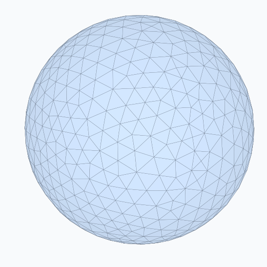
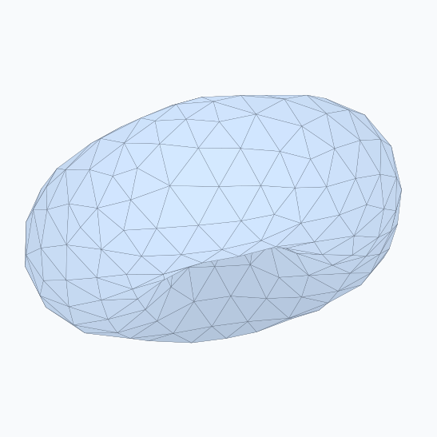
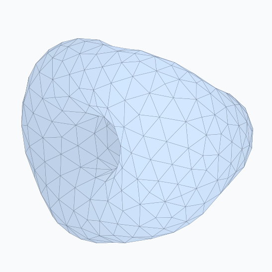
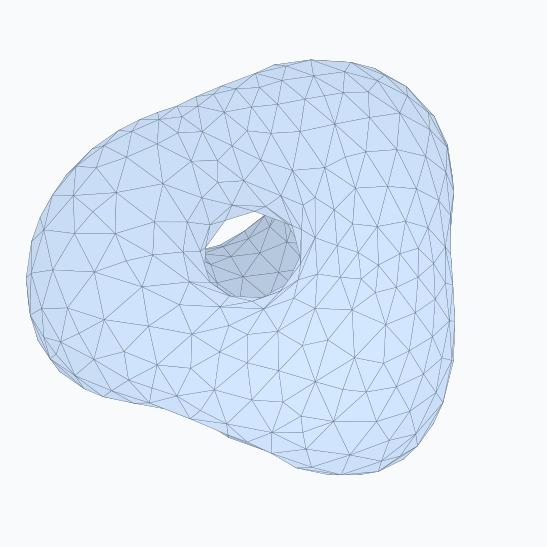
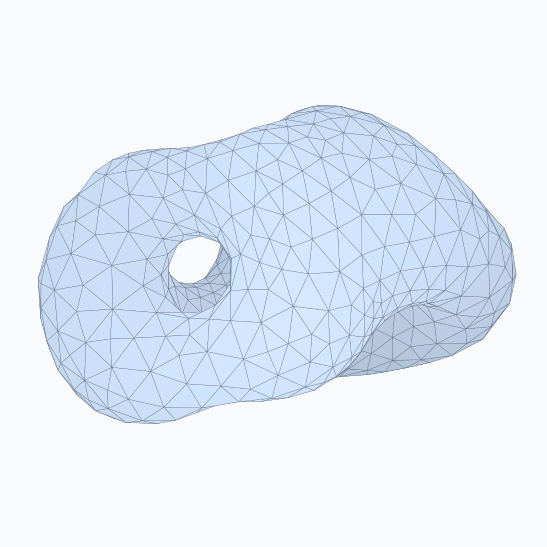
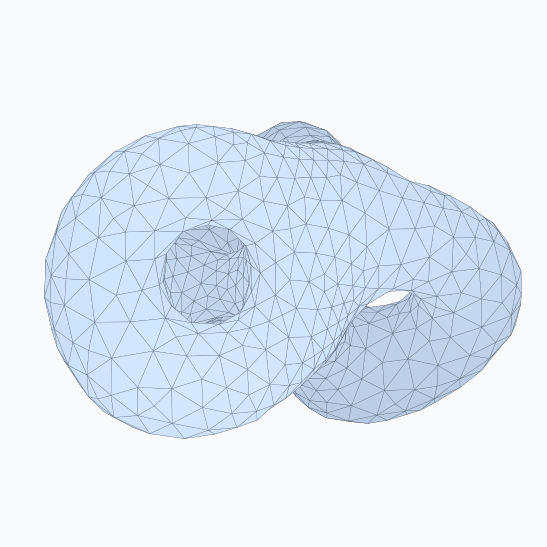
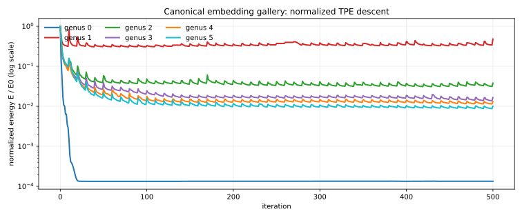

01: Abstract
Our original proposal aimed to implement Repulsive Shells, a recent 2024 paper about smoothly blending 3D shapes without them passing through themselves (self-intersecting). However, we realized that building the full complex mathematical solver required for this was too large for the timeframe of a class project. Therefore, our final project focuses on building the foundational system it relies on, called Repulsive Surfaces. We successfully implemented an algorithm that naturally untangles 3D meshes by simulating a repulsive force, and we tested it by unraveling shapes with 0 to 5 holes (genus 0 through 5).
02: Technical Approach
Our system naturally untangles 3D meshes by minimizing a specific "energy" metric that heavily penalizes parts of the surface that get too close to intersecting. Because calculating this repulsive force between every single pair of triangles on a mesh is far too slow, we sped up the process using hierarchical data structures to group distant triangles together. Our final results show how messy or tangled starting shapes smoothly transform into neat, untangled final surfaces without requiring explicit continuous collision detection.
To make this work efficiently and stably, our optimization pipeline follows four main steps:
Lessons learned
One of our biggest takeaways was underestimating the compute power required to iterate quickly; slow optimization runs made debugging and resolving issues a major bottleneck. Additionally, our main challenges were subtle numerical modeling mistakes rather than syntax bugs, such as biased energy aggregates, OpenMP summation non-determinism changing optimizer paths, and remeshing altering resolution targets. Ultimately, we learned that research graphics code requires not only sufficient compute for rapid testing, but also exact baselines and strict regression tests around anything that changes the objective.
03: Results
We ran six gallery optimizations with
OMP_NUM_THREADS=4, 500 iterations, dynamic
remeshing every 10 iterations, and frame dumps at every
iteration. Outputs are stored under
out/gallery_genusN.

Genus 0. Sphere-like minimizer.

Genus 1. Torus of revolution.

Genus 2. Multi-handle embedded state.

Genus 3. Higher-genus spread-out state.

Genus 4. Bounded-remesh result.

Genus 5. Largest shipped gallery mesh.

| genus | start E | final E | drop | faces |
|---|---|---|---|---|
| 0 | 231948 | 31.0357 | 7473.6x | 1280 -> 1172 |
| 1 | 1909.6 | 913.572 | 2.1x | 576 -> 528 |
| 2 | 43672.8 | 1656.33 | 26.4x | 720 -> 828 |
| 3 | 142481 | 2353.83 | 60.5x | 1080 -> 1242 |
| 4 | 346503 | 4505.47 | 76.9x | 1440 -> 1656 |
| 5 | 701006 | 7038.95 | 99.6x | 1800 -> 2070 |
Genus 0 and 1 land on the expected round sphere and torus. The higher-genus examples are harder because the TPE landscape has many local minima; our shipped results are embedded, low-energy states rather than exact symmetry matches to every entry in the Repulsive Surfaces gallery.
Reference validation
The final meshes were checked against Repulsor's all-pairs TPE implementation. Representative brute-force parity ratios were 0.999999999999958 for genus 0, 1.000000000000016 for genus 1, 1.000000000000005 for genus 2, 1.000000000000108 for genus 3, 1.000000000000292 for genus 4, and 1.000000000000280 for genus 5. This validates the core TPE kernel independently of our own finite difference tests.
04: References
- Yu, Brakensiek, Schumacher, Crane (2021). Repulsive Surfaces. ACM SIGGRAPH Asia.
- Sassen, Schumacher, Rumpf, Crane (2024). Repulsive Shells. ACM SIGGRAPH.
- Henrik Schumacher's Repulsor reference implementation, used for comparison but not vendored into our project.
- C++17, CMake, Eigen, OpenMesh, OpenMP, NanoGUI/OpenGL, Polyscope, and Python/Matplotlib for report plots.
05: Contributions
- Atharv Sampath: Project scoping, paper/reference comparison, validation criteria, visual inspection of gallery and shell demos, and final presentation/writeup coordination.
- Michael Pham: Mesh data structure, OpenMesh bridge, normalization, procedural test meshes, brute-force tangent-point energy, and early gradient validation infrastructure.
- Daniel Liu: Barnes-Hut TPE acceleration, Repulsor cross-validation, Sobolev-preconditioned descent, remeshing, gallery demo drivers, and Phase 3/4 Repulsive Shells experiments.
- Elen Papyan: Project website/report structure, visual assets, milestone/final presentation material, and result organization.